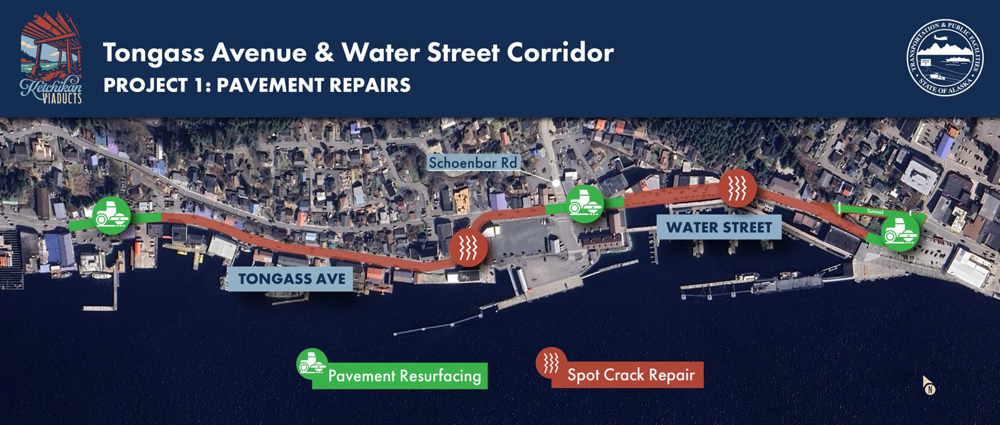
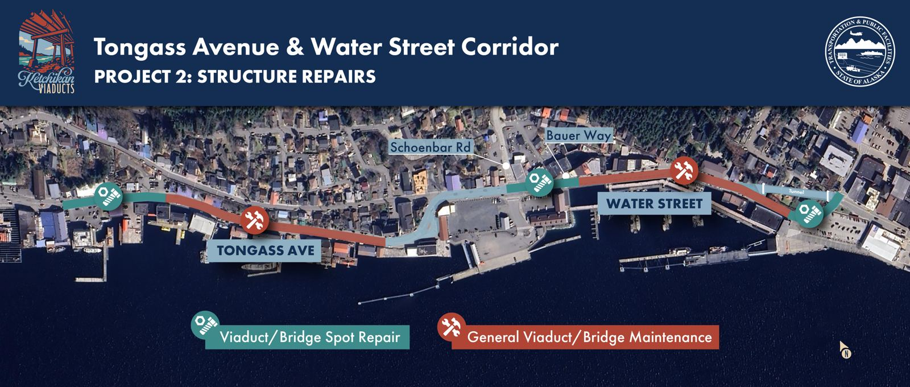
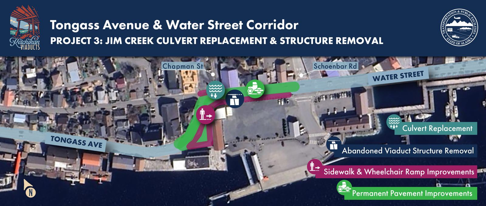
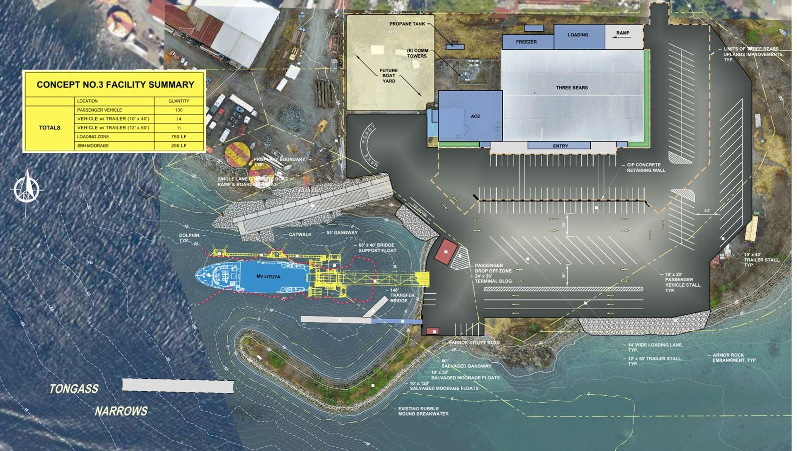

The Alaska Department of Transportation & Public Facilities (DOT&PF) keeps a four-year list of the road, bridge, ferry and trail projects it plans to pay for with federal money. That list is the Statewide Transportation Improvement Program, or STIP. The draft for 2027–2030 is open for public comment now. This page shows what's in it for Ketchikan and how to weigh in.
A project that isn't in the STIP can't use federal highway or transit funds.
Being listed means DOT&PF expects to move the project forward. Schedules can still slip.
DOT&PF says it will publish the comments and its responses in Volume 5 of the final STIP.
Numbers match the project list below. Years are federal fiscal years, which start October 1. "Construction funded FY28" means the contract money is set aside between October 2027 and September 2028, so crews would likely be working in the 2028 season or later.
Schematic, not to scale. Locations come from DOT&PF's project descriptions and federal bridge records. DOT&PF's "South Tongass Highway" starts in the West End, near Hoadley Creek at milepost 0.2, so some projects with "South Tongass" in their names are north of downtown.
Bridges are inspected under federal standards, and each main part is rated from 0 to 9. If any key part scores 4 or lower, the bridge is rated "Poor." That doesn't mean it's unsafe to drive on. It means it needs significant repair or replacement.
Ratings and build years from each project's page in Volume 2 of the draft (V2-152, V2-155, V2-175, V2-255). Rating scale from the Federal Highway Administration's National Bridge Inventory, as summarized by BridgeCondition.com.
Two concrete viaducts carry Tongass through the north end of downtown, from Elliott Street to Grant Street. Together they're about two-thirds of a mile of elevated road, built in the mid-1950s, and each carries roughly 14,000 vehicles a day. DOT&PF owns them and is planning repairs now and replacement later.
Inspectors rate each part of a bridge separately. On both viaducts the road deck you drive on rates Good. The problem is the supports below. Water Street's substructure is rated Poor.
Component ratings from National Bridge Inventory data via BridgeCondition.com (#797) and (#997); lengths and traffic from the same records (count year not listed). The STIP's overall ratings: #797 Poor (4/9), #997 Fair (6/9).
Build years and the 1999, 2009 and 2024 work from DOT&PF's Viaduct Conditions board (Oct 2025). Start-date history from KRBD (Nov 2023), Ketchikan Daily News and the project page.
Care for the existing structures so they keep working until they're replaced.
Replace the 1950s bridges and the aging water and sewer lines underneath.
Reduce flooding, rebuild sidewalks, crosswalks, ramps and railings, and repave.
Replace structures as needed, finish utility work with the City, add a traffic signal and crosswalk signs.
DOT&PF says the work could run "as early as 2027 to 2038+" and each project "may span a season to years." From the Project Phasing board (Oct 2025).
These are the near-term projects DOT&PF says could start construction as early as 2028. They repair the corridor. They don't replace the viaducts.



Maps: Alaska DOT&PF, Ketchikan Tongass Avenue & Water Street Viaducts project page. North points toward the upper left. On the first two maps, downtown and the tunnel are at the right.
DOT&PF says construction could begin "as early as 2028" and that replacing both viaducts would be separate future projects it is still seeking money for.
STIP project 34785 replaces worn-out sections of the Water Street Viaduct with a hillside retaining wall and earth fill, ending at a new abutment at Bent 22. It also rebuilds the Schoenbar Road intersection and improves pedestrian access. The draft funds $10.25 million for design in FY27 and no construction yet (V2-176).
A Ketchikan Daily News report on DOT's City Council briefing listed wider sidewalks without losing parking, possible traffic signals at Schoenbar/Water and Schoenbar/Berth 4, and curbs reshaped so buses and fire trucks can turn.
contact@ketchikanviaducts.com. DOT&PF says it replies within five business days.
Project manager: Jim Brown, P.E., 907-465-1796
Millions of dollars, from each project's page in Volume 2 of the draft. Totals cover only these four years. Several projects also have money spent before 2027 or planned after 2030. The Revilla berth has no project page, so its amount comes from the Volume 3 funding tables. Tap "What is it?" for a description.
Each block is a project's construction money, placed in the federal year it's funded. Outlined blocks are on Tongass itself, the one road through town. The pale dashed block has money listed but no phase, so it may not be construction. Work usually happens in the building season after the money is set aside, and it can slip later.
Public workshops and Borough Assembly sessions settle on a design with new berths, a passenger waiting building and separate pickup lanes.
DOT&PF bids out new berths on both sides plus rehabilitation of the old ones. Engineer's estimate: $40–50 million. Completion deadline: December 31, 2022. The old-berth work was later deferred to a separate contract.
The new berths open. Within two weeks a fire department ambulance scrapes its undercarriage on a new ramp at high tide, and the airport goes back to the old berths.
DOT&PF tells NOAA Fisheries the old-berth refurbishment is "delayed to fall 2025 due to funding constraints."
The state pays about $550,000 to regrade both new ramps.
This STIP funds refurbishing the old berths: $5.6 million (Gravina) and $1.4 million (Revilla). Once both are done, each side has two working berths.
About $7.3 million was spent on this project before FY27; total $12.9 million (V2-76).
This project has no page in the STIP; its amount appears only in the Volume 3 funding tables. $1.4 million looks small for this scope, so it may cover only part of the work.
Scope from DOT&PF's 2023 marine-mammal permit application (Federal Register, July 20, 2023) and the 2020 bid notice; the 2020 notice said the old bridges would be "restored," the 2023 filing says "replaced." Final plan sheets aren't public yet. Timeline from DOT&PF's project page, its November 2024 letter to NOAA Fisheries, and Ketchikan Daily News reporting (July 2024, 2025).
Each of these comes from DOT&PF's own numbers, and each one is a good place to start a comment.
Viaduct bridge #797 was built in 1955 and is rated Poor (4 out of 9). DOT&PF's project page says the funded work is spot repairs to pavement and structure, plus a new Jim Creek culvert to reduce flooding on Water Street, with construction "as early as 2028." It says these repairs are meant to keep the viaducts safe until they're replaced, and that replacing both viaducts would be separate future projects it is still seeking money for.
In the STIP, a $25 million repair stage for #797 and #997 is scheduled for 2031 or later. A separate #797 replacement project has $10.25 million for design in 2027 and no construction money.
How long are the spot repairs expected to last, and when will replacing the viaducts be funded?
Project contact: contact@ketchikanviaducts.com. DOT&PF says it answers questions within five business days. Viaduct project page
Hoadley Creek Bridge in the West End, the first viaduct stage downtown, and Saxman to Surf Street are all funded for construction in FY28. FY29 adds Deermount to Saxman ($42.5 million), the final viaduct stage and the new Saxman ferry terminal. All of it is on Tongass, the one road that runs through town.
Is there a plan to stagger these jobs, and will major closures avoid cruise season?
About $15 million has already been spent on this project, and $42.5 million is set for construction. The project page lists the road's current and expected condition as "Not Available." The work includes rebuilding sidewalks, bike facilities and parking.
What data supports the rebuild, and will the design consider narrower lanes and wider sidewalks?
Average risk of death for a pedestrian struck by a car, by impact speed. Source: Tefft, Impact Speed and a Pedestrian's Risk of Severe Injury or Death, AAA Foundation for Traffic Safety, 2011.
The draft sets aside $25.8 million, mostly from a federal rural ferry grant, to move the M/V Lituya's Ketchikan landing to Saxman Seaport. DOT&PF says it's carrying out the ferry system's 2045 long-range plan (V6-187). Saxman has wanted a terminal since a 1997 joint resolution with the Metlakatla Indian Community.

Is $25.8 million based on the floating-berth design? Will sailings actually increase? Is a shuttle to Ketchikan funded, and what happens to the earlier design work?
Sources: PND Engineers, South Tongass Highway Ferry Terminal Concept Scoping Report for Southeast Conference (July 31, 2023), including Ketchikan Daily News coverage reprinted in its appendix; KRBD, Jan. 2023.
FY27 through FY29 are over-scheduled by a combined $401 million, offset by room in FY30. When that happens, some projects usually slip to later years. Southeast and the rest of the Southcoast Region get 7% of statewide funding, plus the ferry system.
If money runs short, which Ketchikan projects would be delayed first?
After the deadline, DOT&PF reviews comments, revises the draft, publishes its responses in Volume 5, and sends the final STIP to federal highway and transit officials for approval (V1-50). Comments sent later are still accepted for future planning.
From DOT&PF's Table 1-1, V1-12. Airports are planned separately and aren't in the STIP.
Engineering and environmental review. This is when public input changes the most.
Surveying, appraising and buying property the project needs.
Building, rebuilding or repairing the road, bridge or terminal.
Moving power, water, sewer and phone lines out of the way.
Millions of dollars, FY2027–2030. DOT&PF hadn't assigned a purpose to 14.8% of the money in the draft (V3-10).
Millions. This view counts money differently from the $5.63 billion headline, so it adds up to more (V3-5).
| Fiscal year | Planned | Expected | Over / (under) |
|---|---|---|---|
| Four years | 5,629.75 | 5,499.55 | 130.20 |
Millions (V3-3).
What makes a comment useful